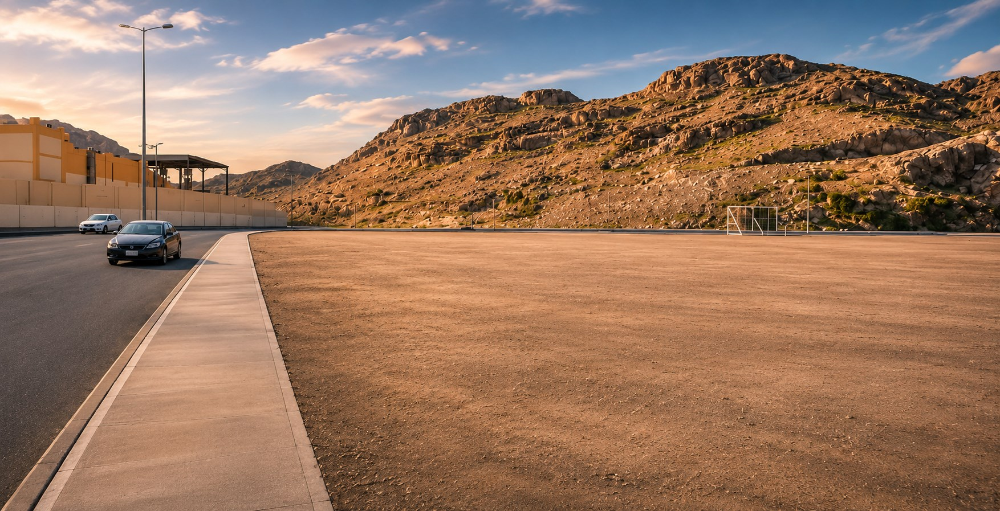
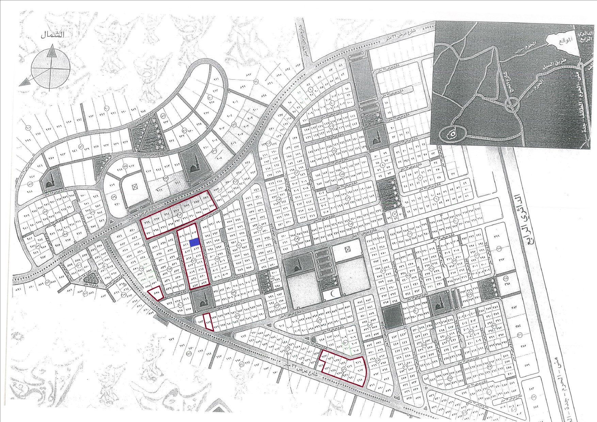
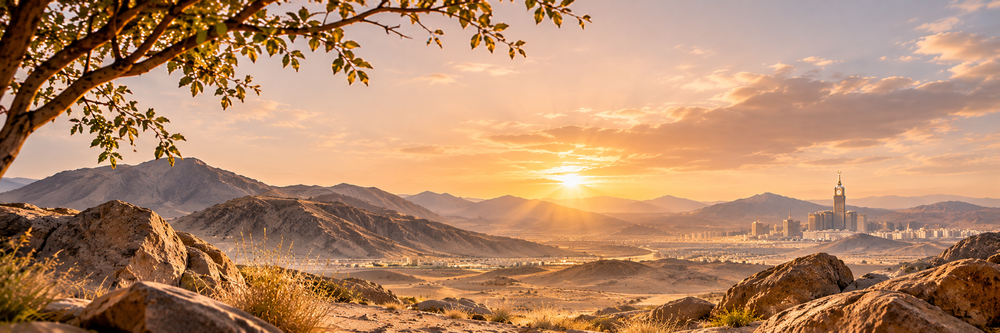

موقع استراتيجي
اتصال بالطريق الدائري الرابع وطريق الملك فيصل.
مساحة تحمل إمكانات الحياة والعمل، وتترك لك رسم خطوتك القادمة.
مخطط سكني وتجاري في مكة المكرمة يضم 47 قطعة، بمساحة إجمالية قدرها 34,720.65 م².
اكتشف الفرصوكل أرض تحمل حكاية.
اتصال بالطريق الدائري الرابع وطريق الملك فيصل.
مساجد ومدارس وروضة أطفال ومراكز تسوق وصيدليات، بحسب البروشور.
تنوع بين القطع التجارية والسكنية / الظهير التجاري.
في حي وادي جليل بمكة المكرمة، عند اتصال الطريق الدائري الرابع بطريق الملك فيصل.
افتح الموقع على خرائط Googleمشاهد واقعية من أرض المشروع ومحيطه، تمنحك تصورًا أوضح لطبيعة الموقع وامتداده واتصاله بالطرق المحيطة.

ابحث، صفِّ، وقارن


المساحة نفسها، وتطلعات مختلفة.
LAND / POSSIBILITY
قطع سكنية / ظهير تجاري · 32 قطعة
أراضٍ مصنفة تجارية · 15 قطعة
المسوّق العقاريREAL ESTATE MARKETER

منصات العقارية
المسوّق العقاري للمشروع
الموقع الرسميالمطورDEVELOPER
شركة مجموعة الراجحي إخوان
الموقع الرسميمعلومات عملية عن سجل القطع والتقييم والتواصل.
رقم الصف هو ترتيب السجل في جدول المصدر، أما رقم القطعة فهو الرقم الرسمي المدرج في الجدول. يعرض الموقع الرقمين منفصلين لتسهيل المطابقة.
لا. هي قيمة تقديرية وفق جدول التقييم المرفق، ولا تمثل سعراً حالياً أو ضماناً للعائد أو حالة توفر القطعة.
ليس بعد. صورة المخطط معروضة كمرجع فقط، ولا يتم تمييز قطعة عليها حتى تتوفر مطابقة هندسية معتمدة بين أرقام القطع وحدودها.
اختر القطعة من سجل المستكشف، وسيظهر رقمها في نموذج التواصل. النموذج حالياً للواجهة فقط ولا يرسل البيانات حتى ربطه بخدمة إرسال. بيانات التواصل مأخوذة من الكتيّب وتحتاج إلى تأكيد.
مساكن الريان · مكة المكرمة
اكتشف القطعة الأقرب إلى رؤيتك، وابدأ استفسارك معنا.